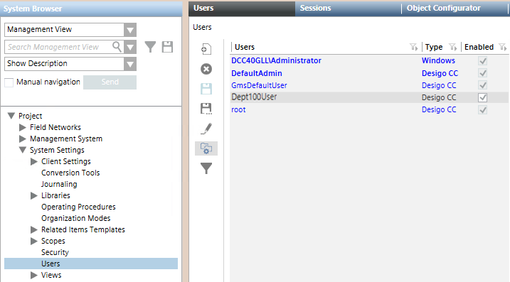

Create System Users for Running Events Reactions Scripts
- Select Project > System Settings > Users.
- The Users tab is displayed.
- Click New
 .
. - In the New User dialog box, specify the user settings as follows:
a. From the User type drop-down list, select the name of the system. For example, Desigo CC.
b. In the User name field, enter the name of the Desigo CC user. For example, Dept100User.
c. Enter password and confirm password.
d. Click OK. - Click Save
 .
. - The new user is available in the Users list.
- Activate the user by selecting the name in the list and then selecting the Enabled check box alongside.
- Repeat steps 2 to 5 above to create all the required Desigo CC users.
- The Desigo CC users created here are available for the user group configuration.
